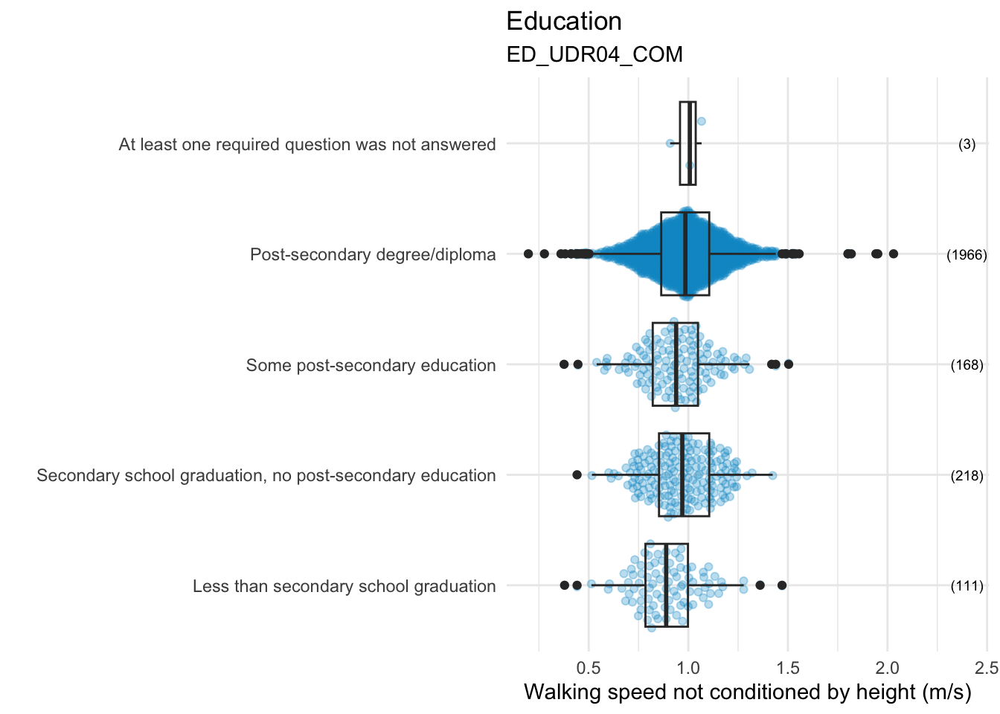
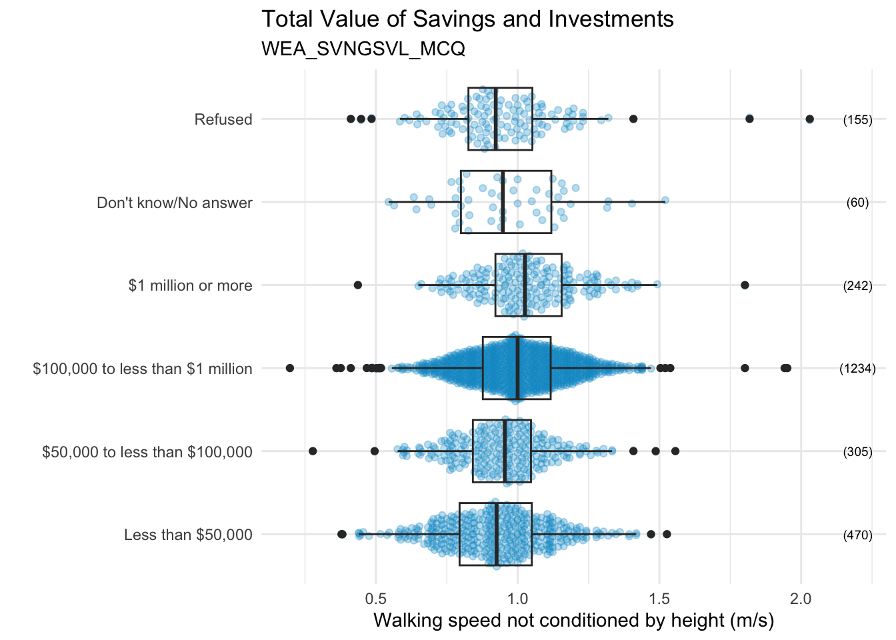
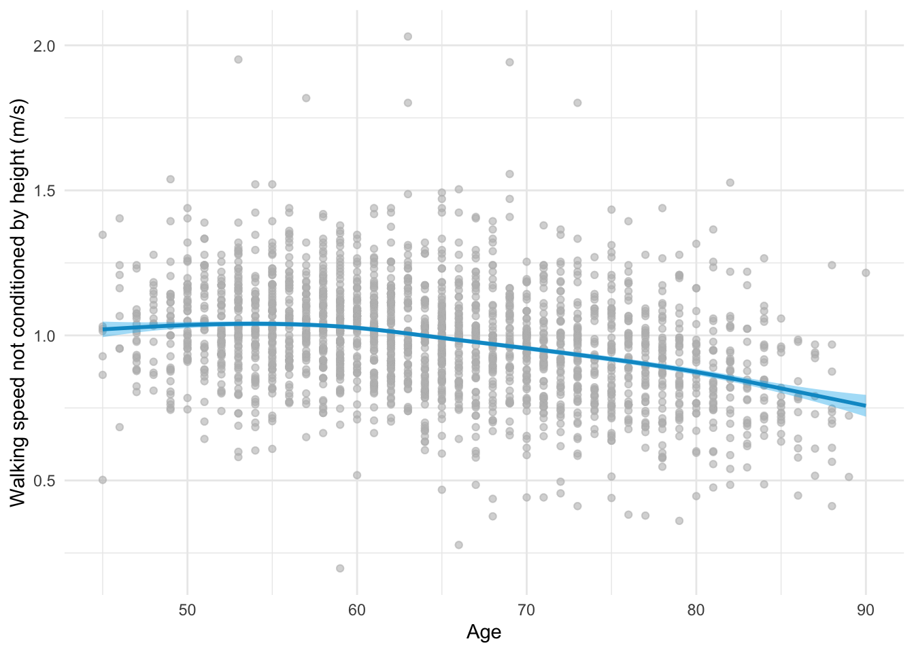
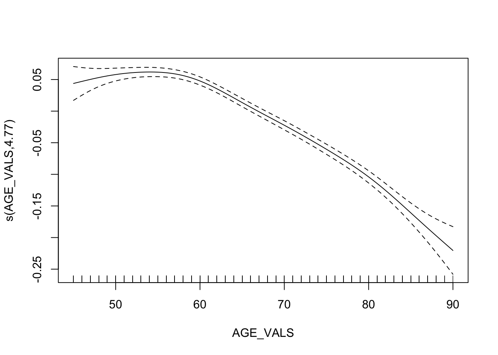

library(haven) # read stata file format
library(readxl) # read excel file format
library(kableExtra)
library(lubridate)
library(tidyr)
library(plotly)
library(ggplot2)
library(ggbeeswarm)
library(PerformanceAnalytics)
library(forcats)
library(gamm4)
library(purrr)
knitr::opts_chunk$set(warning = FALSE, message = FALSE) 3 Data Analysis
The data was extracted from the Canadian Longitudinal Study on Aging Webpage.
The baseline study was conducted in 2008, the first follow-up in 2015. It seems to be data for the second follow up (variables ending in _COF2), even if there is not information available in the webpage.
3.1 Variables
I will assume that for the second follow-up, the variable names are the same as those described for the first follow-up.
# Data
data <- haven::read_dta("data/CLSA_test sample_selected.dta")
# Variable description for the baseline study
var_baseline <- readxl::read_excel("data/baseline_data_dictionaries.xlsx",
col_types = "text") |>
dplyr::filter(name %in% colnames(data)) |>
dplyr::select(-SourceTable)
# Variable description for the first follow-up
var_follow_up1 <-
readxl::read_excel("data/follow-up1_data_dictionaries_v2.xlsx",
col_types = "text") |>
dplyr::filter(name %in% colnames(data)) |>
dplyr::rename(label = `label:en`,
question = `question:en`,
comment = `comment:en`)Some of the variables are labeled. I will extract the labels to can use the information later. For this I create dlabel().
# Extract labels and save them in small datasets
dlabel <- function(variable){
data |>
dplyr::select({{variable}}) |>
dplyr::mutate(lab = haven::as_factor({{variable}})) |>
dplyr::filter (!duplicated({{variable}})) |>
dplyr::arrange({{variable}})
}
ed_label <- dlabel(ED_UDR04_COM)
sdc_label <- dlabel(SDC_MRTL_COM)
inc_tot_label <- dlabel(INC_TOT_COM)
inc_ptot_label <- dlabel(INC_PTOT_COM)
wea_label <- dlabel(WEA_SVNGSVL_MCQ)This are the variables available in the dataset:
table <- rbind(var_baseline, var_follow_up1) |>
dplyr::select(name, label, everything(), -unit, -table) |>
dplyr::arrange(name) |>
kableExtra::kable(caption = "Variables in the dataset") |>
kableExtra::kable_classic(full_width = F)
table| name | label | valueType | question | comment |
|---|---|---|---|---|
| AGE_NMBR_COF1 | Participant age at beginning of FU1 | integer | NA | NA |
| AGE_NMBR_COM | Age (years) | integer | NA | Calculated: Date of interview less reported Date of Birth |
| ED_UDR04_COM | Highest Level of Education - Respondent, 4 Levels | text | NA | Derived Variable |
| INC_PTOT_COM | Total personal income | text | What is your best estimate of your total personal income from all sources, before taxes and deductions, in the past 12 months? | NA |
| INC_TOT_COM | Total household income | text | What is your best estimate of the total household income received by all household members, from all sources, before taxes and deductions, in the past 12 months? | NA |
| SDC_MRTL_COM | Marital/partner status | text | What is your current marital/partner status? | NA |
| SEX_ASK_COM | Sex | text | Are you male or female? | NA |
| WEA_SVNGSVL_MCQ | Total value of savings and investments | text | What is the approximate total value of these savings and investments? | NA |
| WEA_SVNGSVL_MCQ | Total value of savings and investments | text | What is the approximate total value of these savings and investments? | NA |
| WLK_TIME_COF1 | Total time required to complete 4mWalk (in seconds) | decimal | NA | Combination of registered times in seconds and centiseconds |
| WLK_TIME_COM | Total time required to complete 4mWalk (in seconds) | decimal | Record time requried to perform the test | Combination of registered times in seconds and centiseconds |
| startdate_COF1 | In-Home Questionnaire start date& time | datetime | NA | NA |
| startdate_COM | Date and time at start of interview | datetime | NA | NA |
3.2 Exploratory Data Analysis (EDA)
3.2.1 General observations
In this dataset there are are reported the baseline values (
*_COM), as well as the first follow up in 2017/18 (*_COF1) and the second follow up (*_COF2), that seems to be 2019/20/21 in the data.Data were collected between 2012 and 2021.
summary(data) id startdate_COM startdate_COF1 startdate_COF2
Min. : 6 Length:1000 Length:1000 Length:1000
1st Qu.:21704 Class :character Class :character Class :character
Median :45524 Mode :character Mode :character Mode :character
Mean :44858
3rd Qu.:67622
Max. :90271
AGE_NMBR_COM AGE_NMBR_COF1 AGE_NMBR_COF2 SEX_ASK_COM
Min. :45.00 Min. :47.00 Min. :50.00 Length:1000
1st Qu.:55.00 1st Qu.:58.00 1st Qu.:60.00 Class :character
Median :63.00 Median :65.00 Median :68.00 Mode :character
Mean :63.47 Mean :66.06 Mean :68.44
3rd Qu.:72.00 3rd Qu.:74.00 3rd Qu.:76.00
Max. :86.00 Max. :89.00 Max. :91.00
NA's :81 NA's :148
ED_UDR04_COM SDC_MRTL_COM INC_TOT_COM INC_PTOT_COM
Min. :1.000 Min. :1.000 Min. :1.000 Min. :1.000
1st Qu.:4.000 1st Qu.:2.000 1st Qu.:2.000 1st Qu.:2.000
Median :4.000 Median :2.000 Median :3.000 Median :2.000
Mean :3.577 Mean :2.308 Mean :3.494 Mean :2.792
3rd Qu.:4.000 3rd Qu.:2.000 3rd Qu.:4.000 3rd Qu.:3.000
Max. :9.000 Max. :5.000 Max. :9.000 Max. :9.000
WEA_SVNGSVL_MCQ WLK_TIME_COM WLK_TIME_COF1 WLK_TIME_COF2
Min. :1.000 Min. :-88.000 Min. :-99999.00 Min. :-99999.00
1st Qu.:2.000 1st Qu.: 3.600 1st Qu.: 3.60 1st Qu.:-99993.00
Median :3.000 Median : 4.090 Median : 4.09 Median : 3.22
Mean :3.116 Mean : 4.172 Mean : -6439.67 Mean :-46395.00
3rd Qu.:3.000 3rd Qu.: 4.683 3rd Qu.: 4.72 3rd Qu.: 4.18
Max. :9.000 Max. : 14.410 Max. : 10.63 Max. : 20.32
NA's :66 NA's :4 NA's :81 NA's :148 The cases were
NAvalues were reported forCOF1andCOF2were removed. TheNAsforWEA_SVNGSVL_MCQwere also eliminated from the analysis.Variable
heightis missing.
data$startdate_COF1[data$startdate_COF1 == ""] <- NA
data$startdate_COF2[data$startdate_COF2 == ""] <- NA
data <- data |>
dplyr::mutate(
startdate_COM = as.POSIXct(startdate_COM,
format = "%Y-%m-%dT%H:%M:%OS"), # convert dates
startdate_COF1 = as.POSIXct(startdate_COF1,
format = "%Y-%m-%dT%H:%M:%OS"),
startdate_COF2 = as.POSIXct(startdate_COF2,
format = "%Y-%m-%dT%H:%M:%OS")
) |>
dplyr::filter(
is.na(data$startdate_COF1) == FALSE,
is.na(data$startdate_COF2) == FALSE,
is.na(data$WEA_SVNGSVL_MCQ) == FALSE) # remove NAs3.2.2 Data wrangling
- The dataset is divided in subtables to make it easier to use.
- The variable
Walking timeis converted toWalking speed. - Following Stringhini et al. (2018), the ages have been reduced from 45 to 90.
# Socieconomic variables sub-table
soc_vars <- data |>
haven::zap_labels() |> # I have already saved the labels in tables
tidyr::pivot_longer(col = c(9, 11, 12, 13),
values_to = "SOC_VALS",
names_to = "SOC_VARS") |>
dplyr::filter(!SOC_VALS < 0) |>
dplyr::select(id, SOC_VALS, SOC_VARS)
# Gender sub-table
gender <- data |>
haven::zap_labels() |>
dplyr::select(id, SEX_ASK_COM)
# Walking speed sub-table
wlk_time <- data |>
haven::zap_labels() |>
tidyr::pivot_longer(14:16, values_to = "WLK_TIME", names_to = "COHORT") |>
dplyr::filter(!WLK_TIME < 0) |>
tidyr::separate(COHORT, into = c("A", "B", "COHORT"), sep = "_") |>
dplyr::select(id, COHORT, WLK_TIME)
# Age sub-table
age <- data |>
haven::zap_labels() |>
pivot_longer(5:7,
values_to = "AGE_VALS", names_to = "AGE_VARS") |>
dplyr::select(id, AGE_VALS, AGE_VARS) |>
dplyr::filter(!is.na(AGE_VALS)) |>
tidyr::separate(AGE_VARS, into = c("A", "B", "COHORT"), sep = "_") |>
dplyr::select(id, COHORT, AGE_VALS)
# Final table
data_by_cohort <- dplyr::left_join(age, wlk_time)
data_plot <- dplyr::left_join(data_by_cohort, soc_vars)
# Convert Walking time to Walking speed
data_plot <- data_plot |>
dplyr::mutate(WLK_TIME = (4 / WLK_TIME)) |>
dplyr::filter(AGE_VALS >= 45,
AGE_VALS <= 90)3.2.3 Demographic variables
data_plot |>
dplyr::left_join(gender) |>
select(id, AGE_VALS, SEX_ASK_COM) |>
filter (!duplicated(id)) |>
ggplot() +
scale_fill_brewer() +
geom_histogram(
aes(AGE_VALS),
bins = 10,
color = "#e9ecef",
alpha = 0.6,
position = 'identity'
) +
scale_x_continuous(breaks = round(seq(45,90, by = 5),1)) +
xlab("Age") +
facet_wrap(vars(SEX_ASK_COM)) +
theme_minimal()Comments:
There are fewer observations for older ages.
There are 824 observations in the dataset. 48.7 % are men and 51.3 % are women.
3.2.4 Socioeconomic Variables
data_boxplot <- data_plot |>
dplyr::filter(SOC_VARS == 'ED_UDR04_COM') |>
dplyr::left_join(ed_label, by = dplyr::join_by(SOC_VALS == ED_UDR04_COM))
# Number of points by category
obs1 <- data_boxplot |> dplyr::count(lab)
data_boxplot |>
ggplot(aes(x = as.factor(lab), y = WLK_TIME)) +
geom_quasirandom(alpha = 0.3, color = "deepskyblue3") +
geom_boxplot(fill = 'transparent') +
coord_flip() +
labs(title = "Education", subtitle = "ED_UDR04_COM") +
xlab("") +
ylab("Walking speed not conditioned by height (m/s)") +
geom_text(data = obs1, aes(y = 2.4,
label = paste0("(", n, ")")),
size = 2.5) +
theme_minimal()

Considering that we don’t have height values to associate with walking speed, we will solely make comments about the amount of observations in each category
Comments:
- 79.7% of the participants hold a post-secondary degree/diploma.
- 50% of the participants have
Total Value of Saving and Investmentsbetween$100,000 to less than $1 million dollars. - However, the
Total Household Incomeis more homogeneous, being reported$50,000 or more, but less than $100,000by 32% of the participants. This could indicate that some study participants with a post-secondary degree and $100,000 - $1 million dollars of savings and investments belongs to more than oneTotal Household Incomecategory. More analysis should be conducted to confirm this. - Data reported as
refusedorNo answershould be removed of the analysis.
3.3 Walking Speed as function of age.
- Obervations are not independent
- Outcome variable: walking speed
First, let’s visualize the data. ggplot2 function geom_smooth() adjusts the data to walking-speed ~ s(age, bs = "cs").
data_plot |>
ggplot(aes(y = WLK_TIME,
x = AGE_VALS)) +
geom_point(alpha = 0.2, color = 'gray') +
geom_smooth(color = "deepskyblue3", fill = "deepskyblue2") +
xlab("Age") +
ylab("Walking speed not conditioned by height (m/s)") +
theme_minimal()
If we fit this basic first model:
model <- gam(data = data_plot, WLK_TIME ~ s(AGE_VALS))
summary(model)
Family: gaussian
Link function: identity
Formula:
WLK_TIME ~ s(AGE_VALS)
Parametric coefficients:
Estimate Std. Error t value Pr(>|t|)
(Intercept) 0.978068 0.001996 490.1 <2e-16 ***
---
Signif. codes: 0 '***' 0.001 '**' 0.01 '*' 0.05 '.' 0.1 ' ' 1
Approximate significance of smooth terms:
edf Ref.df F p-value
s(AGE_VALS) 4.773 5.843 172.1 <2e-16 ***
---
Signif. codes: 0 '***' 0.001 '**' 0.01 '*' 0.05 '.' 0.1 ' ' 1
R-sq.(adj) = 0.109 Deviance explained = 10.9%
GCV = 0.032821 Scale est. = 0.032798 n = 8236plot(model) 
Despite we don’t have height values, it is possible to capture a decreasing trend of the walking speed with the age.
gam.check(model)
Method: GCV Optimizer: magic
Smoothing parameter selection converged after 4 iterations.
The RMS GCV score gradient at convergence was 4.021007e-07 .
The Hessian was positive definite.
Model rank = 10 / 10
Basis dimension (k) checking results. Low p-value (k-index<1) may
indicate that k is too low, especially if edf is close to k'.
k' edf k-index p-value
s(AGE_VALS) 9.00 4.77 0.99 0.24To be continued…
If we split the data by gender:
data_plot |>
dplyr::left_join(gender) |>
filter(!WLK_TIME < 0) |> # outlier: walking speed around -70 removed
ggplot(aes(y = WLK_TIME,
x = AGE_VALS)) +
geom_point(alpha = 0.2, color = 'gray') +
geom_smooth(aes(color = SEX_ASK_COM, fill = SEX_ASK_COM)) +
facet_wrap(vars(SEX_ASK_COM)) +
xlab("Age") +
ylab("Walking speed not conditioned by height (m/s)") +
labs(fill = "Gender", color = "Gender") +
theme_minimal()
Next steps:
Add
age,height, and the socioeconomic variables as fixed effects using a generalized additive mixed model (GAMM).This could be performed for one socioeconomic variable at a time or to all the variables at the same time.
In Stringhini et al. (2018),
studyis used as a random effect at the intercept and age slope, but in that article, multiple studies from different countries were used.
In this case, we could try usingidas a random effect.
3.4 Removed
socvars <- data |>
select(starts_with("INC"), ED_UDR04_COM, WEA_SVNGSVL_MCQ, SDC_MRTL_COM)
chart.Correlation(socvars, histogram=TRUE, pch=19)data_plot |>
ggplot( aes(x = as.factor(SOC_VALS), y = WLK_TIME)) +
geom_boxplot(aes(fill = fct_relevel(COHORT, "COM", "COF1", "COF2"))) +
facet_wrap(vars(SOC_VARS), scales = "free_x" ) +
labs(fill = "COHORT") +
theme_minimal()# library(gamm4)
#
# model1 <- gamm(WLK_TIME ~ s(AGE_VALS) + INC_TOT_COM,
# data = data_plot)
#
# model2 <- gamm(WLK_TIME ~ s(AGE_VALS) + INC_TOT_COM +
# ED_UDR04_COM + WEA_SVNGSVL_MCQ,
# random = ~ (1 | id),
# data = data_plot)
#
# model3 <- gamm(WLK_TIME ~ s(AGE_VALS, k = 4) +
# s(INC_TOT_COM, k=4) +
# s(ED_UDR04_COM, k=4) +
# s(WEA_SVNGSVL_MCQ, k=4),
# random = ~ (1 | id)
# data = data_soc)
#
#
#
# summary(model1)
# summary(model2)
# summary(model3)